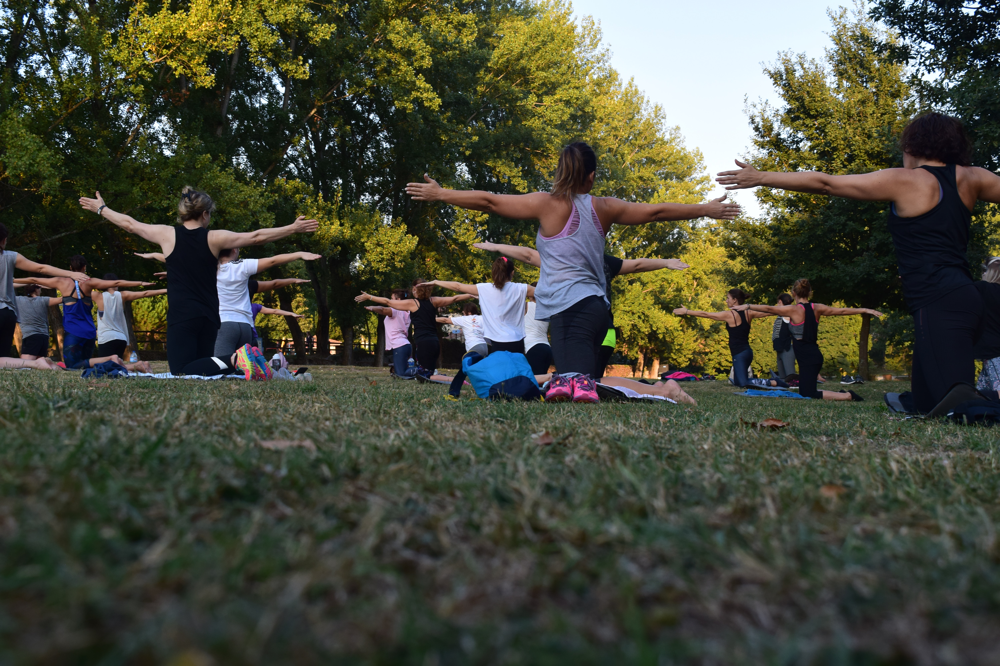

About us
Welcome Beginners! We are here to support you in your new path which is Yoga. When you’re brand new to yoga, it can feel intimidating and be difficult to know exactly where and how to get started. Our Yoga for Beginners guide was created specifically for you—to give you all the tips, guidelines, and recommendations you will need to start a successful yoga practice.
What Is Yoga? Yoga is a vast collection of spiritual techniques and practices aimed at integrating mind, body, and spirit to achieve a state of enlightenment or oneness with the universe. What is normally thought of as “yoga” in the West is really Hatha Yoga, one of the many paths of yoga. The different paths of yoga emphasize different approaches and techniques but ultimately lead to the same goal of unification and enlightenment. Hatha Yoga attains the union of mind-body-spirit through a practice of asanas (yoga postures), pranayama (yoga breathing), mudra (body gestures), and shatkarma (internal cleansing). These physical practices are used to purify the body and cultivate prana (life-force energy). Modern Hatha Yoga does not emphasize many of these esoteric practices and instead focuses more on the physical yoga postures. Regardless of what your goals or intentions are for starting, just the yoga poses themselves is a fantastic form of mental and physical exercise.
Is Yoga Right for You? Yoga is in no way exclusive—being able to practice yoga does not matter how old you are, how much you weigh, what you do for a living, where you live, or what religion you practice. Yoga is accessible for just about everyone. If you have a medical condition or a recent injury, it can be challenging or dangerous to do certain types of yoga, specific poses, or breathing techniques. Usually, there are alternatives or modifications that can allow you to practice safely, and many common complaints have specific yoga therapy remedies. If you are recovering from an injury or are in poor health, we recommended consulting with a physician or other qualified health care professional before beginning yoga. While you may feel some intensity in the belly of your muscles while in a yoga pose, you should never feel pain, especially in the joints. A sharp or intense pain is your body’s signal to tell you to stop, back off, and take it easy.
What Is the Best Yoga for Beginners? If you are out of shape or extremely inflexible, we recommend you begin with a gentle practice until you have built up the strength and flexibility for more challenging sequences. If you are a relatively fit and flexible person, you should be able to jump right into a regular hatha yoga class. Once you are familiar with the basic postures, you can explore a vinyasa or flow class. We recommend you avoid Ashtanga, Bikram, or hot yoga until you have built up some physical strength and endurance. It is always best to error on the side of caution and safety and approach yoga slowly and carefully. The best way to know if yoga is for you is to give it a try!
How to Practice Yoga Yoga is typically performed in bare feet on a sticky yoga mat with optional yoga props. The yoga movements and poses require clothes that can stretch and move freely with your body. You can purchase clothing specifically designed for yoga practice, but you can probably put together a comfortable outfit from your existing wardrobe to get started. Yoga classes may use additional props, the most common being straps, blocks, blankets, and bolsters. You don’t need to purchase these right away as you can easily substitute these items with scarves or neckties, a stack of books, and pillows. If you take classes at a yoga studio, they will provide everything that you need.
How Often Should I Do Yoga? If you can practice yoga 3 or more times per week, you will see significant improvements in your flexibility, range of motion, strength, balance, inner peace, and overall well being. Ideally, we recommend shorter and more frequent sessions, 20-45 minutes long, and for a total of 3-4 hours spread over several days. Practicing yoga less than this amount will still be beneficial, but you will see smaller improvements over a longer period of time. Like most things, the more time you can dedicate towards it, the more benefits you will receive.
The Benefits of Practicing Yoga The benefits of yoga are almost endless! Practicing yoga helps build healthy virtues and good values, such as discipline, honesty, devotion, self-inquiry, mindfulness, and non-attachment. Yoga empowers you to make conscious choices toward living a more healthy and fulfilling life. Yoga also helps you:
- Keep your mind healthy and strong
- Reduce stress and promote relaxation
- Get a better night’s sleep
- Boost your immune system
- Help heal common aches like back pain
- Increase happiness and well being and reduce depression
- Lose weight and change your body shape
- Improve and maintain the health of muscles, joints, and organs
- Prevent conditions such as diabetes, heart disease, and auto-immune disorders
- Improve flexibility, strength, stamina, mobility, range of motion, and balance
If you have any questions? Please feel free to contact us
History

Yoga’s history has many places of obscurity and uncertainty due to its oral transmission of sacred texts and the secretive nature of its teachings. The early writings on yoga were transcribed on fragile palm leaves that were easily damaged, destroyed or lost. The development of yoga can be traced back to over 5,000 years ago, but some researchers think that yoga may be up to 10,000 years old old. Yoga’s long rich history can be divided into four main periods of innovation, practice and development.
Pre-Classical Yoga The beginnings of Yoga were developed by the Indus-Sarasvati civilization in Northern India over 5,000 years ago. The word yoga was first mentioned in the oldest sacred texts, the Rig Veda. The Vedas were a collection of texts containing songs, mantras and rituals to be used by Brahmans, the Vedic priests. Yoga was slowly refined and developed by the Brahmans and Rishis (mystic seers) who documented their practices and beliefs in the upanishads, a huge work containing over 200 scriptures. The most renowned of the Yogic scriptures is the Bhagavad-Gîtâ, composed around 500 B.C.E. The Upanishads took the idea of ritual sacrifice from the Vedas and internalized it, teaching the sacrifice of the ego through self-knowledge, action (karma yoga) and wisdom (jnana yoga).
Classical Yoga In the pre-classical stage, yoga was a mishmash of various ideas, beliefs and techniques that often conflicted and contradicted each other. The Classical period is defined by Patanjali’s Yoga-Sûtras, the first systematic presentation of yoga. Written some time in the second century, this text describes the path of RAJA YOGA, often called "classical yoga". Patanjali organized the practice of yoga into an "eight limbed path" containing the steps and stages towards obtaining Samadhi or enlightenment. Patanjali is often considered the father of yoga and his Yoga-Sûtras still strongly influence most styles of modern yoga.
Post-Classical Yoga A few centuries after Patanjali, yoga masters created a system of practices designed to rejuvenate the body and prolong life. They rejected the teachings of the ancient Vedas and embraced the physical body as the means to achieve enlightenment. They developed Tantra Yoga, with radical techniques to cleanse the body and mind to break the knots that bind us to our physical existence. This exploration of these physical-spiritual connections and body centered practices led to the creation of what we primarily think of yoga in the West: Hatha Yoga.
Modern Period In the late 1800s and early 1900s, yoga masters began to travel to the West, attracting attention and followers. This began at the 1893 Parliament of Religions in Chicago, when Swami Vivekananda wowed the attendees with his lectures on yoga and the universality of the world’s religions. In the 1920s and 30s, Hatha Yoga was strongly promoted in India with the work of T. Krishnamacharya, Swami Sivananda and other yogis practicing Hatha Yoga. Krishnamacharya opened the first Hatha Yoga school in Mysore in 1924 and in 1936 Sivananda founded the Divine Life Society on the banks of the holy Ganges River. Krishnamacharya produced three students that would continue his legacy and increase the popularity of Hatha Yoga: B.K.S. Iyengar, T.K.V. Desikachar and Pattabhi Jois. Sivananda was a prolific author, writing over 200 books on yoga, and established nine ashrams and numerous yoga centers located around the world. The importation of yoga to the West still continued at a trickle until Indra Devi opened her yoga studio in Hollywood in 1947. Since then, many more western and Indian teachers have become pioneers, popularizing hatha yoga and gaining millions of followers. Hatha Yoga now has many different schools or styles, all emphasizing the many different aspects of the practice.